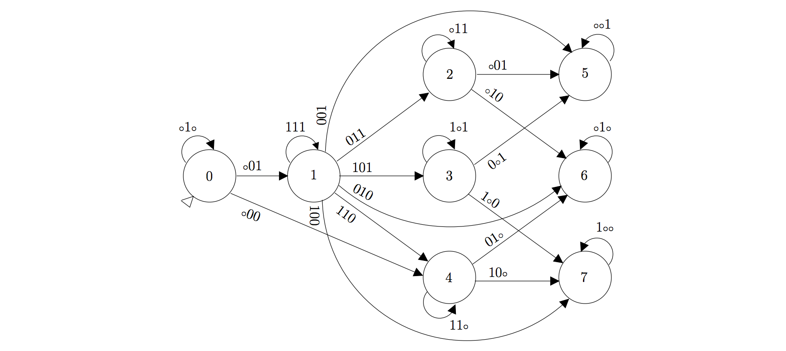

My research interests
PhD thesis: Algorithmic for automatic annotations of Non Ribosomal Peptides

Abstract
The monomeric composition of polymers is powerful for structure comparison and synthetic biology, among others. However, most of the online molecular resources only provide atomic structures but not monomeric structures. So, I designed a software called smiles2monomers (s2m) to infer monomeric structures from chemical ones.
The underlying algorithm is composed of two steps: a search of the monomers using a subgraph isomorphism algorithm fitted to data and a tiling algorithm to obtain the best coverage of the polymer by non-overlapping monomers. The search is based on a Markovian index improving the execution time by 30% compared to the state of art. The tiling is performed using a greedy algorithm refined by a “branch & cut” algorithm. s2m had been tested on two different already annotated datasets. The software reconstructed the manual annotations with an excellent sensibility in a very short time.
Norine database, the reference knowledge base about specific polymers called Non Ribosomal Peptides (NRP), is developed by the bonsai research group. s2m, executed on the Norine database, alerted us about wrong manual annotations. So, s2m not only creates new annotations, but also facilitates the process of annotation curation. The new annotations generated by the software are currently used for the discovery of new NRP, new activities and may be used to create completely new and artificial NRP.
Related publications
Y. Dufresne, L. Noé, V. Leclère, M. Pupin, Smiles2Monomers: a link between chemical and biological structures for polymers, J. of Cheminformatics (2016), link
M. Pupin, Q. Esmaeel, A. Flissi, Y. Dufresne, P. Jacques, V. Leclère, Norine: a powerful resource for novel nonribosomal peptide discovery, Synth. and Sys. Biotech. (2015), link
A. Flissi, Y. Dufresne, J. Michalik, L. Tonon, S. Janot, L. Noé, P. Jacques, V. Leclère, M. Pupin, Norine, the knowledgebase dedicated to non-ribosomal peptides, is now open to crowdsourcing, Nuc. Acids Res. (2015), link
Links
Thesis manuscript (in french): https://yoann-dufresne.github.io/Thesis/manuscrit.pdf
Smiles2Monomers: http://bioinfo.lifl.fr/norine/smiles2monomers.jsp
Source code: https://github.com/yoann-dufresne/Smiles2Monomers
Minimal Deterministic Universal Levenshtein Automaton (DULA), creation and exploitation
All those words in a single sentence ! Don’t be afraid I will explain the whole thing in a very simple way !

The Levenshtein Automaton
The Levenshtein distance, also called edit distance, is the minimal number of operations needed to transform a word x into a word y on a given alphabet. The only modifications allowed are insertion, deletion or substitution of a letter. For example, the word ABBA is at a distance 2 of AAA (a deletion and a substitution). We can easily create an automaton accepting every words with, at most, a distance k of a given word x, for a fixed k. But this kind of automaton is specific to the word x. With a simple change of the alphabet, we can dissociate the concept of word recognition from a fixed word. Instead of looking for the mutations of a letter l of a given word x, we can simply focus on the similarity/dissimilarity of a letter at a given position. So instead of a given set of letters we can use an alphabet where each symbol represents all the possible similarities/dissimilarities. For example, instead of saying that AA is at distance 1 of AB by one substitution, AA is at distance 1 of AC, … you can just say that all the words that have 2 letters and the first one in common with AA are at distance one of AA. The resulting automaton is called the Universal Levenshtein Automaton.
Neighborhood of a word
When I was a PhD student in Lille, Hélène Touzet, our group leader, was interested in the generation of this automaton. Specifically, she wanted to know the number of neighbors for a given word at a fixed maximal edit distance k. The straightforward way to count this neighborhood is to generate all the neighbors, removing the redundant ones. For instance, the word AA has 7 neighbors at distance 1 on the alphabet ={A, B} (A, AB, BA, AAA, BAA, ABA, AAB). But this method is very inefficient. This is really inefficient, because this generation need an exponential time (). Another way to look at the problem is to focus on the specificity of the possible alignments between a word an its neighbors. But this method needs to define many different particular cases and leads to an upper bound because of the non unicity of some alignments.
So Hélène took the problem like an automaton problem. First, she synthesized the work of many people to produce an efficient algorithm to generate the Deterministic Universal Levenshtein Automaton. Then she used the fact that you can generate a DULA once for each k value and make the product of this automaton with an automaton representing the word of interest to count the neighborhood. For more details on the algorithms, you can read the research article cited after this text.
My contributions
I am not a co-author of this article, but I really appreciate the beauty of the method. That’s why I started to implement the algorithms as a proof of concept. My idea is to use this code to determine, from a given word, the probabilities of getting a given sequence at distance k by chance compared to the other neighbors at the same edit distance.
For now, I wrote the code that can generate any DULA (if your RAM is large enough). I used a minimizer on all the automata for k<=7 and the outputs are similar to the inputs. So, the algorithms seem to generate the minimal automata but we don’t have any proof yet. All the C++ code is available on my github.
My next step is to write the code to browse (genre naviguer ?) the product of the automata and output the count of the neighbors.
Related publications
H. Touzet, On the Levenshtein Automaton and the Size of the Neighbourhood of a Word, conf. LATA 2016,link
Y. Dufresne, H. Touzet, The neighbourhood of a string for the Levenshtein distance, conf. seqbio 2016, abstract slides
Links
ula (DULA generation): https://github.com/yoann-dufresne/ula
wordborhood: work in progress